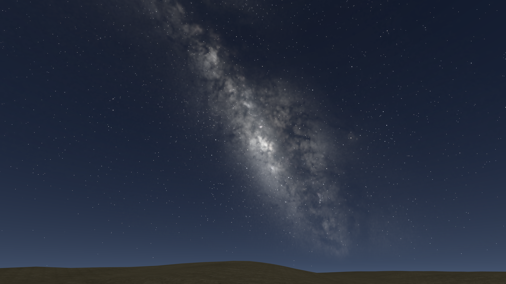
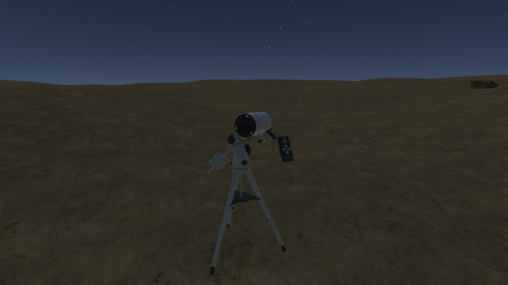
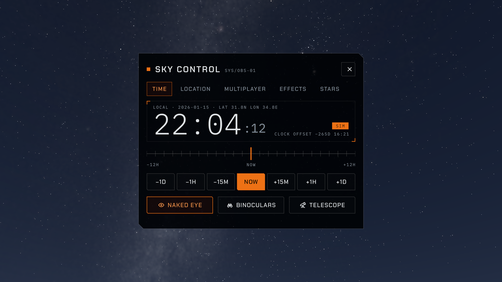

VR astronomy · In development for Meta Quest 3
Your place
under the stars.
An open night sky. A telescope at your side. Explore astronomy from inside a virtual observing site.

VR astronomy · In development for Meta Quest 3
An open night sky. A telescope at your side. Explore astronomy from inside a virtual observing site.
The observing site
Look around the sky, select an astronomical object, and use the virtual telescope to explore your target.
SKYNARIUM brings together a star catalogue, an adjustable observing time and location, and hands-on telescope controls in a VR environment.

Explore the stars and Milky Way from an observer’s point of view.
Change the observing time and location to see a different view of the sky.
Select objects and work with the telescope’s pointing controls.

A different sky
Move through time or choose another observing location. Explore how the night sky changes around you.
The sky controls are part of the observing experience, with the stars still in view.
Inside SKYNARIUM
Development footage · 31 seconds
Ambient night sounds; no speech in this film. The sequence shows the night sky, the telescope, object selection, time controls and observing-location search.